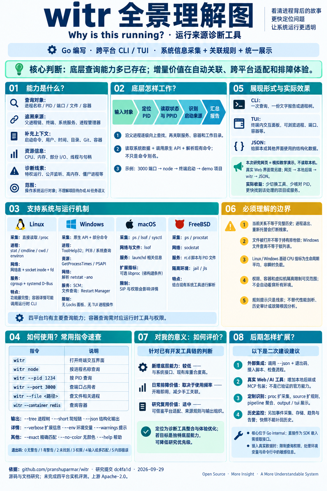

找回运行上下文
端口冲突、残留开发服务器、陌生后台服务：从 PID 找到工作目录和启动关系，再决定去哪里处理。
witr --port 3000 --verbose适合：日常本地开发OPEN SOURCE FIELD NOTES / 001
从一个端口出发，找到进程、启动它的父进程，以及背后的服务与项目。
dc4fa1d跨平台 · Go · Apache-2.0
打开全景图，放大阅读 ↗START HERE / 先建立整体理解
witr 将已有系统数据、原生 API 和命令的查询结果关联起来，回答“谁在运行、由谁启动、属于什么项目”。它的底层查询能力多已存在，增量主要是跨平台适配、来源规则与排障体验。
下面是自编模拟演示。真实网页监控需要另建本地后端，当前页面不会读取你的系统。
3000 端口被谁占用了？
仅在示例数据中查询，不执行系统命令。支持 --pid / --port / --file / --container。
根据当前父进程关系逐级追溯。
02 / UNDER THE HOOD
点击步骤，查看当前系统如何完成一次查询。
03 / CAPABILITY MAP
支持查询不代表能获得所有信息；权限与系统隔离仍然生效。
| 能力 | Linux | Windows | macOS | FreeBSD |
|---|
支持 = 上游声明支持；有限 = 受权限或实现范围限制。容器查询需要对应运行时工具。基于固定提交的 README 与源码，未对四平台逐一实测。
04 / PUT IT TO WORK
端口冲突、残留开发服务器、陌生后台服务：从 PID 找到工作目录和启动关系，再决定去哪里处理。
witr --port 3000 --verbose适合：日常本地开发用 JSON 与退出码接入排障脚本、项目面板或 AI 助手。HTTP / MCP 包装属于二次建设，非本项目已验证的官方服务。
witr --pid 1234 --json适合：项目管理与自动化在采集层增加数据源，在来源识别层增加规则，再复用分析与展示逻辑。核心位于 internal，直接当 SDK 使用需要重构接口。
proc → source → pipeline → output适合：内部平台与定制工具当前关系 ≠ 完整历史父进程退出、重新托管或读取失败，会使追溯链不完整。
诊断提示 ≠ 故障定论高内存、特权运行等是排查线索，需要结合业务判断。
资源快照 ≠ 性能剖析Linux / Windows 基础采集中的 CPU 是生命周期平均值；本页不模拟实时曲线。
文件查询 ≠ 系统锁列表Windows 可按文件查询相关进程，但不支持 Locks 面板。
RESEARCH & PROVENANCE
本页为独立研究演示。场景、PID、目录和资源数值均为自编示例；JSON 采用本页的教学结构，不承诺与上游输出字段一致。未嵌入或执行 witr 二进制。